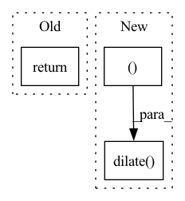

Pattern ID :34063

Before Change
time2 = 0
times = np.array([time1, time2]).reshape(1, 2)
T_21 = get_groundtruth_odometry(time1, self.data_dir + seq + "/gt/radar_odometry.csv")
return {"data": cart, "T_21": T_21, "times": times, "mask": cart_mask}
def get_dataloaders(config):
Retrieves train, validation, and test data loaders.
After Change
mask = radar_polar_to_cartesian(azimuths, polar_mask, self.config["radar_resolution"],
self.config["cart_resolution"],
self.config["cart_pixel_width"]).astype(np.float32)
kernel = cv2.getStructuringElement(cv2.MORPH_ELLIPSE,(5,5))
mask = cv2.dilate(mask, kernel, iterations=3)
mask = cv2.erode(mask, kernel, iterations=4)
mask = cv2.dilate(mask, kernel, iterations=2)
// Get ground truth transform between this frame and the next
time1 = int(self.frames[idx].split(".")[0])
if idx + 1 < len(self.frames):
In pattern: SUPERPATTERN
Frequency: 3
Non-data size: 3
Instances
Fragment ID: 97411162
Project Name: utiasasrl/hero_radar_odometry
Commit Name: aece3505a59d976871684ce923e8c899b88f8941
Time: 2021-01-17
Author: keenburn2004@gmail.com
File Name: datasets/oxford.py
M Class Name: OxfordDataset
N Class Name: OxfordDataset
M Method Name: __getitem__(2)
N Method Name: __getitem__(2)
M Parent Class: Dataset
N Parent Class: Dataset
M File Name: datasets/oxford.py
N File Name: datasets/oxford.py
M Start Line: 110
M End Line: 123
N Start Line: 111
N End Line: 130
'>
Before Change
pred_mask[bg] = 0
pred_mask[fg] = [255, 203, 0, int(255 * 0.73)]
pred_mask = cv2.cvtColor(pred_mask, cv2.COLOR_BGRA2RGBA)
return pred_mask
After Change
mask = masks[0].astype(np.uint8) * 255
// TODO: how to set kernel size?
kernel_size = 9
mask = cv2.dilate(
mask, np.ones((kernel_size, kernel_size), np.uint8), iterations=1
)
// fronted brush color "ffcc00bb"
res_mask = np.zeros((mask.shape[0], mask.shape[1], 4), dtype=np.uint8)
res_mask[mask == 255] = [255, 203, 0, int(255 * 0.73)]
res_mask = cv2.cvtColor(res_mask, cv2.COLOR_BGRA2RGBA)
'>
Fragment ID: 97411160
Project Name: sanster/lama-cleaner
Commit Name: a6aec566d963e67c17c0871dca1c89d26e1cdcaa
Time: 2023-04-06
Author: cwq1913@gmail.com
File Name: lama_cleaner/plugins/interactive_seg.py
M Class Name: InteractiveSeg
N Class Name: InteractiveSeg
M Method Name: forward(4)
N Method Name: forward(4)
M Parent Class: BasePlugin
N Parent Class: BasePlugin
M File Name: lama_cleaner/plugins/interactive_seg.py
N File Name: lama_cleaner/plugins/interactive_seg.py
M Start Line: 242
M End Line: 264
N Start Line: 48
N End Line: 75
'>
Before Change
// now make the image properly for tesseract (white background)
thresh = util.invert(thresh)
return thresh, char_contours
After Change
ret, thresh = cv.threshold(img_gray, 0, 255, cv.THRESH_BINARY_INV+cv.THRESH_OTSU)
se = cv.getStructuringElement(cv.MORPH_CROSS, (3,3))
eroded = cv.erode(thresh, se, iterations=2)
dilated = cv.dilate(eroded, se, iterations=2)
watershed_result = marker_based_watershed_segmentation(image, dilated)
watershed_result[watershed_result == -1] = 255
'>
Fragment ID: 97411158
Project Name: andreybicalho/vrpdr
Commit Name: 06b2c9a2d5884578ceffc0c21d2d3d9d004b4362
Time: 2020-05-26
Author: andreybicalho@gmail.com
File Name: src/image_preprocessing.py
M Class Name: AnonimousClass
N Class Name: AnonimousClass
M Method Name: extract_chars(1)
N Method Name: extract_chars(1)
M Parent Class:
N Parent Class:
M File Name: src/image_preprocessing.py
N File Name: src/image_preprocessing.py
M Start Line: 190
M End Line: 205
N Start Line: 186
N End Line: 205